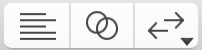

Use the editor configuration buttons () on the left of the toolbar to change the editor configuration.
Show a single editor: Click the left button ().
Show a main editor with an assistant editor: Click the middle button ().
Change the location of the assistant editor: Click and hold the middle button (), then choose a location from the pop-up menu.
Show the comparison editor: Click and hold the right button, then choose Comparison () from the pop-up menu.
Find out who made changes: Click and hold the right button, then choose Authors () from the pop-up menu.
View the source control log: Click and hold the right button, then choose Log () from the pop-up menu.